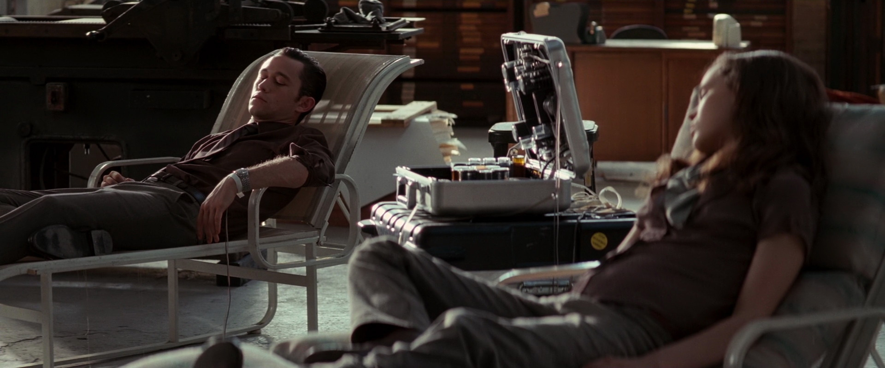

Inception - THE DREAM IS REAL
What is meaning of Inception? Its dictionary meaning is the establishment or starting point of an institution or activity. In Simpple words it is establishmentBut here in this Film its meaning is Inception: The practice of entering dreams and planting an idea in someone's head. Normally Cobb and his team only invade dreams to steal secrets and they aren't sure if Inception is really possible. The Architect: The person who constructs the dream world inside the mind of the Dreamer.
Do Watch Trailor of movie here: https://www.youtube.com/watch?v=8hP9D6kZseM
* There is a machine, which can give ability to share a dream with people connected to it.
* To share dream everyone should have a sound sleep, for this specially prepared medinice is necessary or if sleep is gonna be for 1-3hrs then its not needed.
* Dream can be many layered, that means you can dream within a dream. In the movie there is 3 layered dream.
* Limbo, is something when someone lost into a dream. In limbo, people stayed into their raw, infinite subconscious mind. Nobody knows it fully as recovering from this is rare.
* Totem, a simple device to check whether anyone is in dream or reality.
Story:
Leo DiCaprio and his team is hired, by Ken Watanabe to plant the idea in Cilian Murphy's head to break up his empire. What Leo's team doesn't know is that Leo's former wife Mario Cotillard haunts his dreams, as SPOILERS he planted the idea that their world wasn't real, after he spent close to 30-40 years with her in the Limbo stage. This idea possessed her, until she thought that the real world was also a dream world, and killed herself. He feels guilty and allows himself to be haunted by Cotillard's projection in his dreams.
Leo and his team succeed in their task. Whether the end is still a dream or reality, is up to the viewer. The thing that matters is that Leo is back with his children, whose faces he could not see throughout the whole film, due to his guilt, and he doesn't care if its a dream or reality, in the end.
